Local LLM is a private, fully offline AI assistant engineered to run cutting-edge open-weight large language models directly on your smartphone (Android & iOS).
By fusing llama.cpp's C++ quantization engine with native hardware backends (OpenCL for Qualcomm Adreno GPUs, Metal for Apple Silicon, and multi-core CPU threading), Local LLM lets you chat, analyze documents, and experiment with world-class LLMs anywhere — with zero subscriptions, zero server dependencies, and zero telemetry.
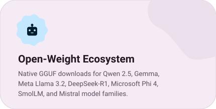
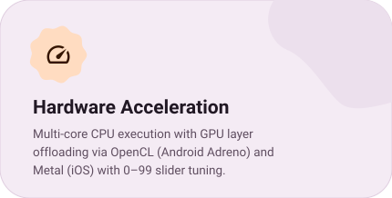
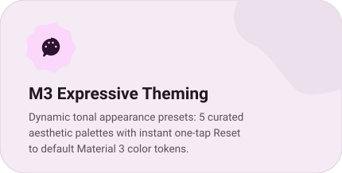
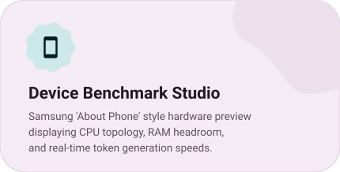
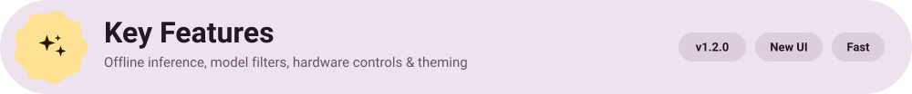
- 🔒 100% Air-Gapped Privacy — Every prompt, inference token, and message stays strictly on your physical device. No logs, no telemetry, no cloud relays.
- 🤖 Expanded Model Architecture Matrix — Instant filters and fast multi-threaded downloads for Qwen, Gemma, Meta Llama, DeepSeek, Microsoft Phi, SmolLM, and Mistral.
- ⚡ Granular CPU & GPU Offloading — Allocate dedicated CPU core threads and fine-tune GPU layer offload sliders (0–99) to optimize inference speed and battery endurance.
- 🎨 Dynamic Material 3 Expressive Appearance — 5 curated aesthetic tonal color palettes (#CDC5B4, #85756E, #95BB9E, #B8A5D6, #9397CC) with a one-tap Reset button to restore defaults.
- 📱 Realistic Device Benchmark Mockup — Samsung "About Phone" style hardware inspection overview displaying chipset topology, memory headroom, GPU driver status, and live generation speed.
- 👤 'My Profile' Management — Profile picture personalization (preset avatars, upload, reset), name/email settings, dual storage strategy (Sign-In vs Local Storage), and chat history controls (Local vs Don't Save).
- 💬 Telegram Feedback Loop — In-app feedback form integrated with the developer's Telegram bot for instant transmission of feature requests and suggestions.
- 🌐 In-App Multilingual Switching — Dynamic language selector supporting full app localization with English as the default.
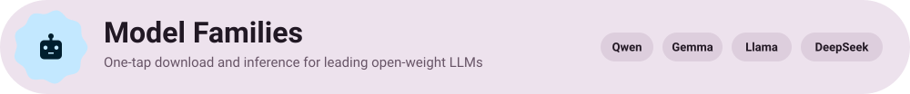
Local LLM natively supports popular GGUF-quantized model architectures with automatic parameter detection, context window sizing, and prompt template resolution:
Model Family
Developer
Architecture
Recommended Quants
Min. RAM
Target Use Case
Qwen 2.5
Alibaba Cloud / QwenLM
Dense Transformer
Q4_K_M, Q5_K_M
4 GB – 8 GB
General reasoning, code synthesis, multi-turn chat
Multilingual comprehension, advanced instruction following
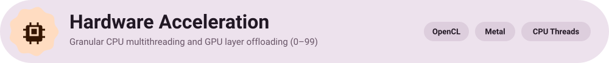
Maximize token generation throughput and control thermals with hardware controls:
- CPU Core Thread Tuning: Allocate optimal compute threads (e.g., 4 to 8 threads) aligned with your device's big.LITTLE core cluster topology.
- GPU Layer Offload Slider (0–99): Offload model compute layers directly to graphics hardware:
- Android: Hardware-accelerated OpenCL compute pipelines targeting Qualcomm Adreno and ARM Mali GPUs.
- iOS: Apple Metal compute pipelines with Unified Memory Architecture (UMA) for high tokens/sec.
- Context Length & Cache Quantization: Granular context sizing (512 to 32,768 tokens) with Flash Attention compatibility and FP16 / Q8 / Q4 KV-cache quantization.
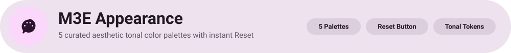
Local LLM features a Material 3 Expressive dynamic themer with 5 curated tonal palettes designed for visual comfort:
Palette Swatch
Hex Code
Aesthetic Style
Intended Atmosphere
#CDC5B4
Warm Sand
Minimalist editorial, warm neutral, soft daylight
#85756E
Earth Mocha
Grounded earthy tones, high contrast, warm reading mode
Creative lilac, playful expressive vibe, modern pastel
#9397CC
Slate Blue
Technical focus, clean oceanic tone, night shift balance
> Reset to Default: A dedicated Reset button instantly clears custom tonal tokens and reverts to the default Material 3 color system with zero restart required.
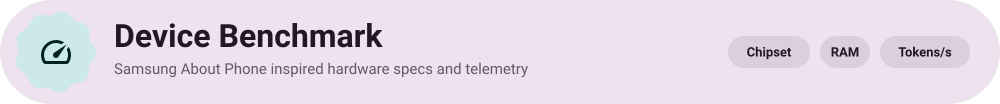
The Benchmark section incorporates a hardware inspection view inspired by Samsung's "About Phone" design:
- Chipset & Processor Topology: Real-time identification of processor cores, clock speeds, and active threads.
- RAM Headroom & Consumption: Visualized bar graph displaying total physical RAM, active runtime footprint, and memory available for model loading.
- Inference Speed Tracking: Exact tokens-per-second (t/s) metrics for Prompt Evaluation (TTFT) and Token Generation across varied quantization depths.
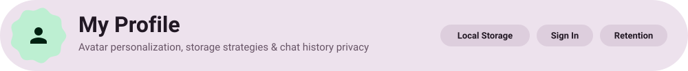
The My Profile suite provides control over your user identity and data lifecycle:
- Avatar Management: Select from built-in avatar presets, upload custom profile pictures, or reset to default with smooth animated transitions.
- Personal Details: Manage your display name and optional email contact.
- Dual Persistence Strategy:
- Local Storage: All settings, palettes, and configurations persist securely in device-encrypted offline storage.
- Sign-In: Option to authenticate via streamlined email sign-in for cross-session continuity.
- Chat History Control:
- Local: Conversations are stored locally using indexed on-device databases.
- Don't Save: Ephemeral mode where chat sessions are flushed from memory immediately upon closing.
- Direct Telegram Feedback: Submit bug reports and feature requests directly to the developer's Telegram bot with zero telemetry metadata attached.
The compiled APK will be located at:
android/app/build/outputs/apk/prod/release/app-prod-release.apk
iOS
cd ios && pod install && cd ..
yarn ios
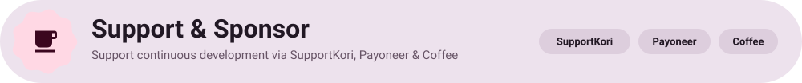
Local LLM is 100% free, open-source, and developed independently. If you enjoy having private, offline AI on your phone and want to support ongoing development, consider sponsoring: